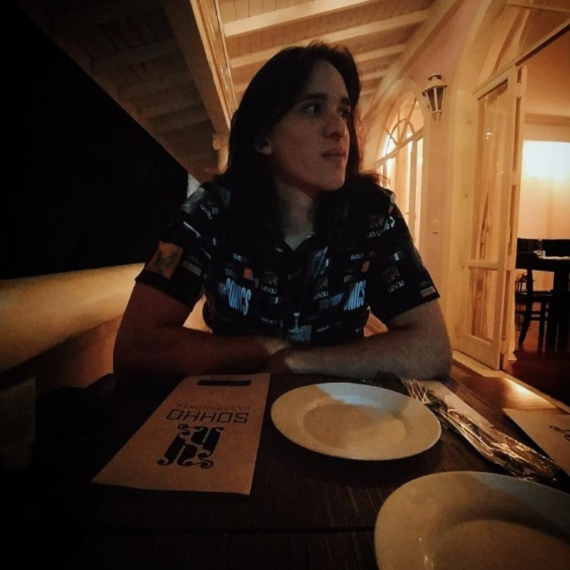

Samuel Canuto Sales
Universitário | Programador
Estudante de Sistemas de Informação pela Universidade Tecnológica Federal do Paraná e ex chefe executivo da empresa de intermediação de produtos internacionais Odin Stock. Tenho experiência em lidar com pessoas, dedicação para solucionar problemas e para aprender coisas novas.
Idiomas
- Inglês | Avançado
Habilidades
- Python | Básico
- C | Básico
- C++ | Básico
- HTML | Básico
- CSS | Básico
Formação
-
2021 - 2025 | Bacharelado em Sistemas de Informação
Universidade Tecnológica Federal do Paraná - UTFPR
Cursos
-
2023 - até o momento | Formação Full Stack Javascript
Thiago M. Medeiros
-
2023 - até o momento | Curso.dev
Filipe Deschamps
Experiências Profissionais
-
Odin Stock
CEO - Chief Executive Officer
Empresa de intermediação de produtos internacionais, criada por mim em 2020 e encerrada em 2021 visando o foco em meus estudos como programador e desenvolvedor.
-
Diretoria de Gestão de Tecnologia da Informação - UTFPR
Estagiário
Desenvolvimento de aplicações web (front end), utilizando as tecnologias: HTML 5 e CSS 3.